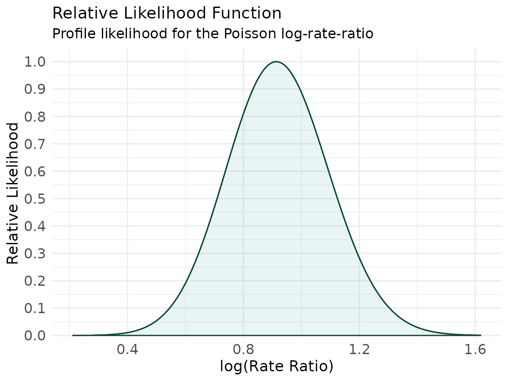
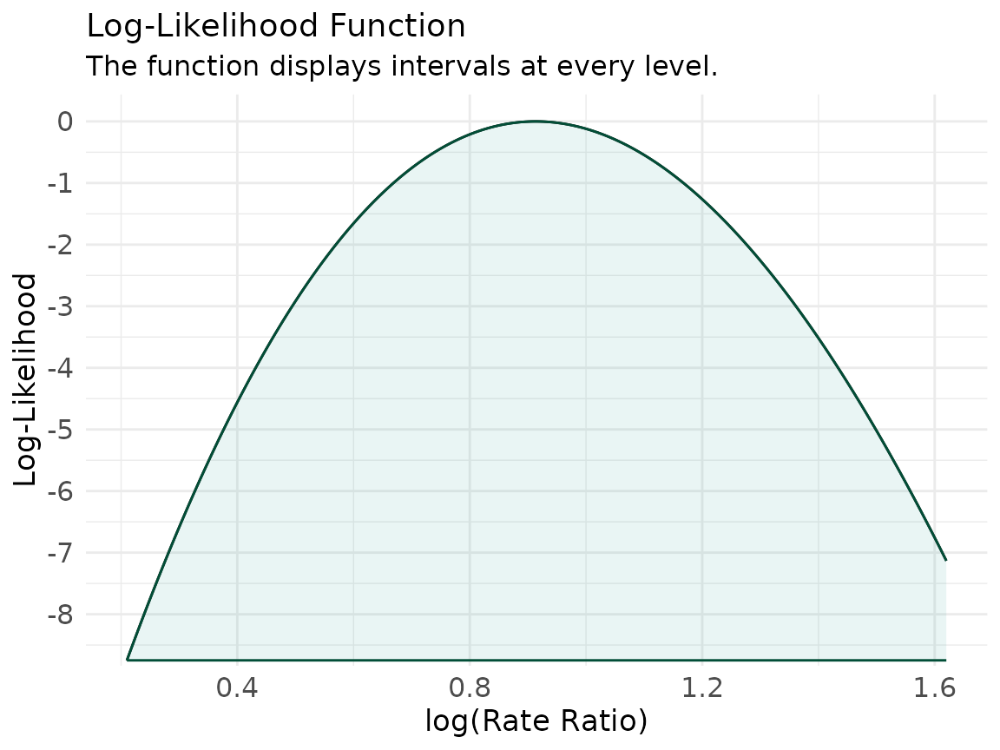
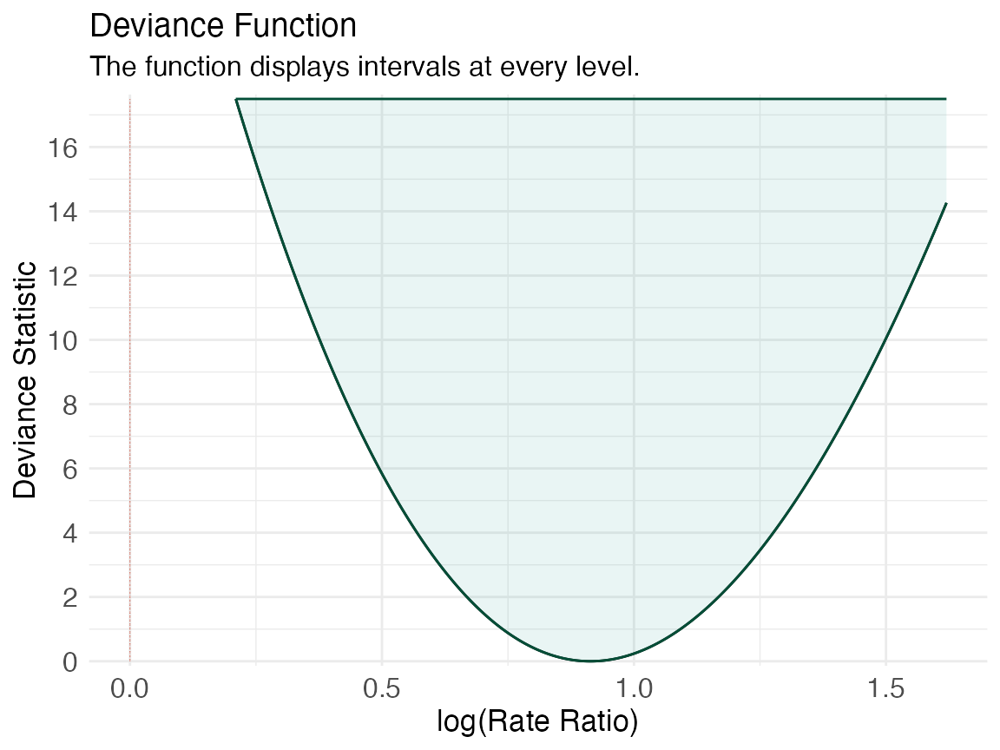
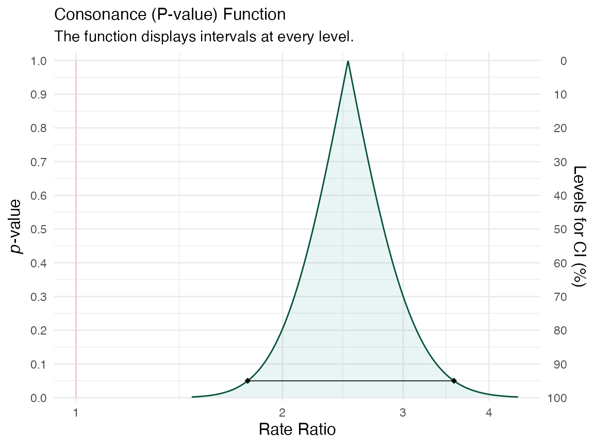
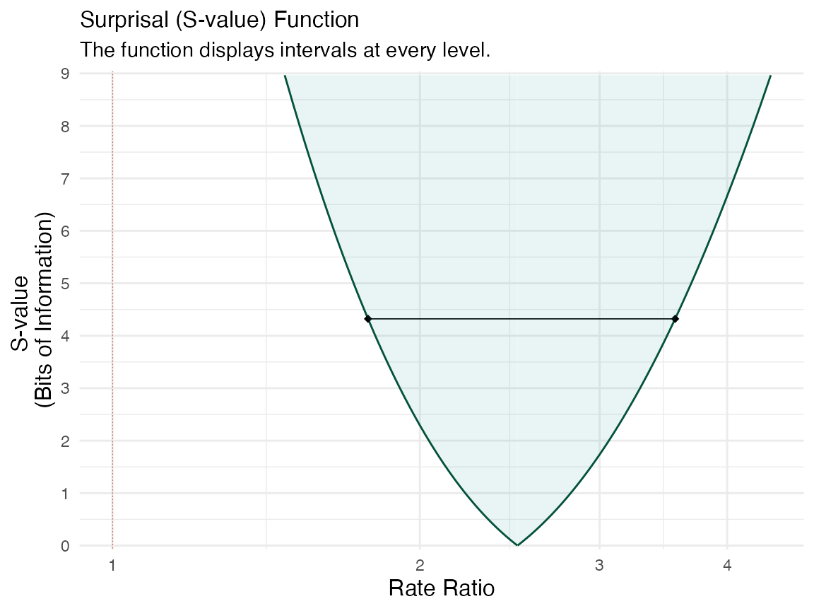
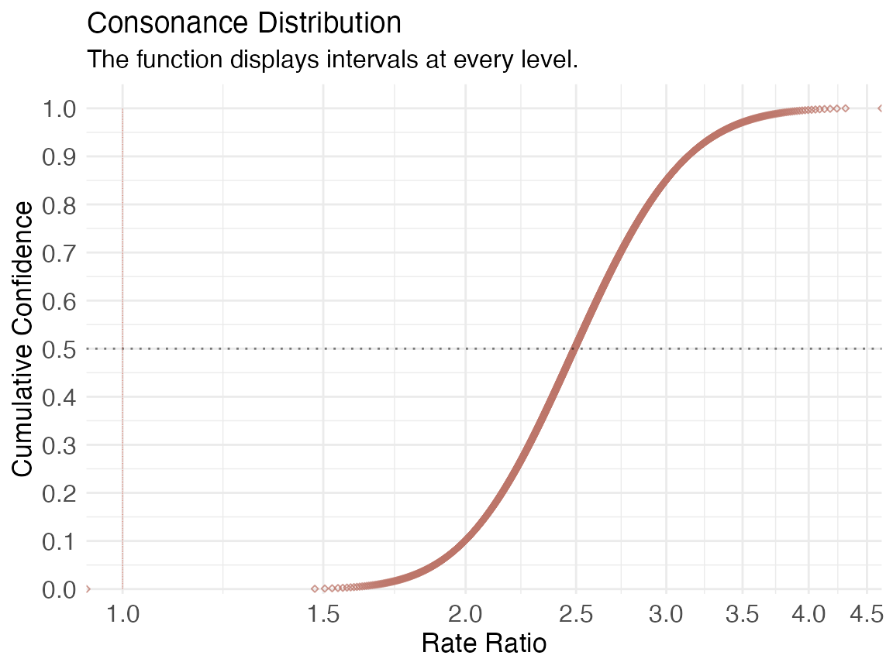
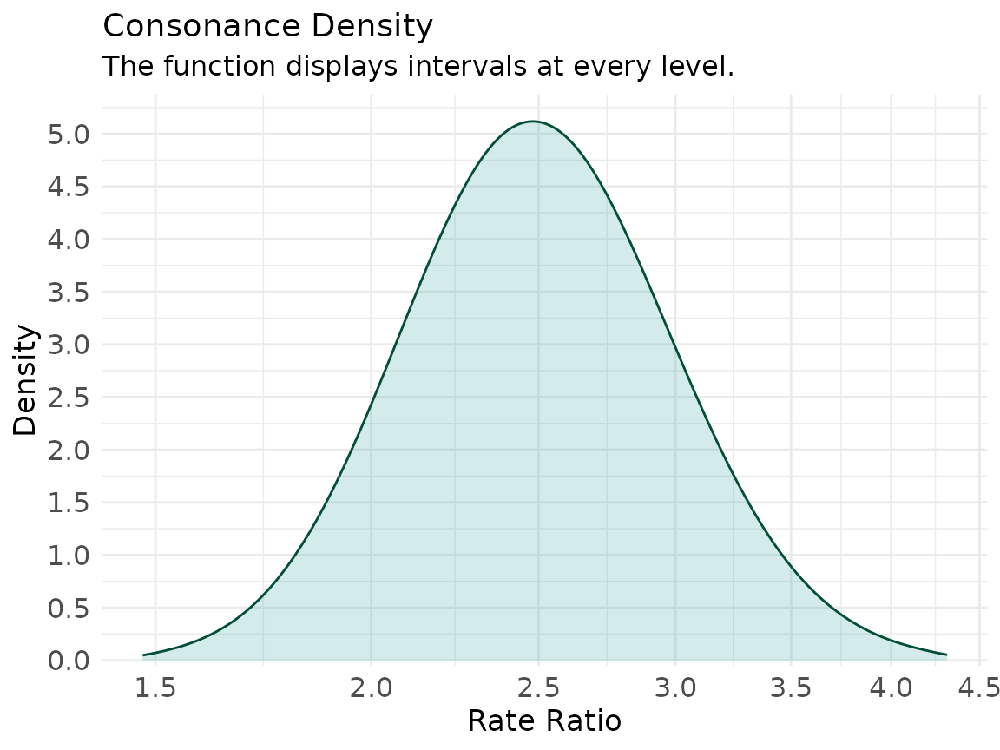

vignettes/poisson-rate.Rmd
poisson-rate.RmdCount outcomes — events per person, per unit time, per unit area — are the natural home of the Poisson model, and the parameter that epidemiologists actually care about is the rate ratio.1 This vignette leads with the likelihood function for a Poisson log-rate-ratio and then shows the matching consonance (P-value) function, so you can see the same coefficient described two ways.2,3
We simulate counts for an exposed vs. unexposed group, adjusting for
one continuous covariate. The true log-rate-ratio for group
is
(a rate ratio of about
).
set.seed(2718)
n <- 200
x1 <- rnorm(n)
group <- rbinom(n, size = 1, prob = 0.5)
eta <- -0.5 + 0.8 * group + 0.3 * x1
y <- rpois(n, lambda = exp(eta))
pois_dat <- data.frame(y, group, x1)
head(pois_dat)
#> y group x1
#> 1 0 0 0.4851789
#> 2 0 0 -1.1725243
#> 3 2 1 0.6890232
#> 4 1 0 -0.6219502
#> 5 0 1 -0.7274038
#> 6 1 0 -0.6131067We reuse the same machinery as the profile-likelihood vignette:
ProfileLikelihood::profilelike.glm() profiles the Poisson
GLM over the nuisance coefficients at each value of the target
parameter, and curve_lik() turns that into a
concurve likelihood object.4,5 The
variable named in profile.theta (here group)
is the one profiled; it is left out of the formula.
library(ProfileLikelihood)
xx <- profilelike.glm(
y ~ x1,
data = pois_dat,
profile.theta = "group",
family = poisson(link = "log"),
length = 500,
round = 2
)
#> Warning message: provide lo.theta and hi.theta
lik <- curve_lik(xx, data = pois_dat)The profiled parameter is on the log scale, so
values here are candidate log-rate-ratios and the null of
“no association” is at
.
ggcurve(lik[[1]], type = "l1", nullvalue = TRUE,
xaxis = "log(Rate Ratio)",
title = "Relative Likelihood Function",
subtitle = "Profile likelihood for the Poisson log-rate-ratio")
ggcurve(lik[[1]], type = "l2",
xaxis = "log(Rate Ratio)",
title = "Log-Likelihood Function")
ggcurve(lik[[1]], type = "d", nullvalue = 0,
xaxis = "log(Rate Ratio)",
title = "Deviance Function")
#> Warning: Using `size` aesthetic for lines was deprecated in ggplot2 3.4.0.
#> ℹ Please use `linewidth` instead.
#> ℹ The deprecated feature was likely used in the concurve package.
#> Please report the issue at <https://github.com/zadrafi/concurve/issues>.
#> This warning is displayed once per session.
#> Call `lifecycle::last_lifecycle_warnings()` to see where this warning was
#> generated.
The likelihood peaks near the true value of , and the deviance function — relative likelihood — turns the same curve into a “distance from the best-supported value” scale, where Royall’s and support cutoffs correspond to deviance heights of about and .6
For the frequentist view we fit the full Poisson GLM and hand it to
curve_gen() with method = "glm". Setting
log = TRUE keeps the underlying values on the log scale but
lets us plot on the rate-ratio scale with
measure = "ratio", where the null is
.2 We wrap
the call in suppressMessages() to hide the long list of
profiling messages.
pois_mod <- glm(y ~ group + x1, data = pois_dat, family = poisson(link = "log"))
rate_curve <- suppressMessages(curve_gen(
model = pois_mod,
var = "group",
method = "glm",
log = TRUE,
steps = 1000
))
ggcurve(rate_curve[[1]], type = "c", measure = "ratio", nullvalue = 1,
xaxis = "Rate Ratio",
title = "Consonance (P-value) Function")
ggcurve(rate_curve[[1]], type = "s", measure = "ratio", nullvalue = 1,
xaxis = "Rate Ratio",
title = "Surprisal (S-value) Function")
#> Warning: Unknown or uninitialised column: `svalue`.
#> Unknown or uninitialised column: `svalue`.
The consonance function peaks at the estimated rate ratio; its slice at is the ordinary 95% rate-ratio interval. The surprisal function reports against each candidate rate ratio, so a rate ratio of carries a readable number of bits of information against it.2,7
Because curve_gen() also returns the density-function
values, you can draw the full confidence distribution and density for
the rate ratio.8,9
ggcurve(rate_curve[[2]], type = "cdf", measure = "ratio", nullvalue = 1,
xaxis = "Rate Ratio",
title = "Consonance Distribution")
ggcurve(rate_curve[[2]], type = "cd", measure = "ratio",
xaxis = "Rate Ratio",
title = "Consonance Density")
The log-rate-ratio likelihood and the rate-ratio consonance function are the same coefficient viewed on two scales and through two inferential lenses. The likelihood asks how well each value is supported by the data; the consonance function asks how compatible each value is under the model.2 For a smooth one-parameter target like this, the likelihood interval and the 95% consonance interval will land in almost the same place — which is exactly why neither a single interval nor a single P-value deserves a bright line.10
Please remember to cite the packages that you use.
citation("concurve")
#> To cite package 'concurve' in publications use:
#>
#> Rafi Z, Vigotsky A (2026). _concurve: Computes and Plots
#> Compatibility (Confidence) Intervals, P-Values, S-Values, &
#> Likelihood Intervals to Form Consonance, Surprisal, & Likelihood
#> Functions_. R package version 3.0.2,
#> <https://CRAN.R-project.org/package=concurve>.
#>
#> Rafi Z, Greenland S (2020). "Semantic and Cognitive Tools to Aid
#> Statistical Science: Replace Confidence and Significance by
#> Compatibility and Surprise." _BMC Medical Research Methodology_,
#> *20*, 244. ISSN 1471-2288. doi:10.1186/s12874-020-01105-9
#> <https://doi.org/10.1186/s12874-020-01105-9>.
#> <https://doi.org/10.1186/s12874-020-01105-9>.
#>
#> To see these entries in BibTeX format, use 'print(<citation>,
#> bibtex=TRUE)', 'toBibtex(.)', or set
#> 'options(citation.bibtex.max=999)'.
citation("ProfileLikelihood")
#> To cite package 'ProfileLikelihood' in publications use:
#>
#> Choi L (2023). _ProfileLikelihood: Profile Likelihood for a Parameter
#> in Commonly Used Statistical Models_. R package version 1.3.
#>
#> A BibTeX entry for LaTeX users is
#>
#> @Manual{,
#> title = {ProfileLikelihood: Profile Likelihood for a Parameter in Commonly Used Statistical
#> Models},
#> author = {Leena Choi},
#> year = {2023},
#> note = {R package version 1.3},
#> }